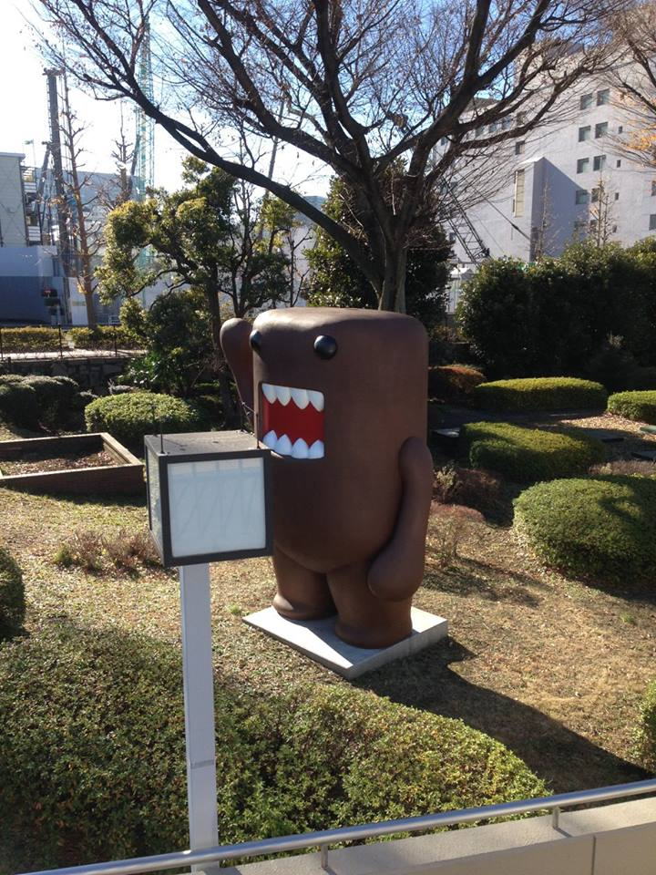
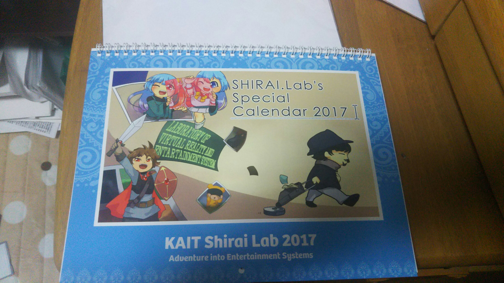

News
-
natsuaki wrote a new post, 2016年度後期セミナーブログ 馬場第9回, on the site 白井研セミナー 3年 4か月前
皆さんおはようございます。馬場夏昭です。今回はセミナーのメンバーで渋谷に出かけました。
そもそも何で渋谷に出かけることになったのかというと、白井先生がNHKの「Rの法則」という番組の撮影に関わっていて、今回はその収録現場を見学させていただけるというお話になったからです。
そして、せっかく渋谷に行くんだから他にも色々回ろうという事になり、もう一度TEPIAに取材に行ったり、今渋谷で開催されているsweets by naked[…]

-
natsuaki wrote a new post, 2016年度後期セミナーブログ 馬場第7回 "構造的な文章の書き方", on the site 白井研セミナー 3年 4か月前
皆さんおはようございます。馬場夏昭です。今回は構造的な文章の書き方について学びました。
Q.構造的な文章とは何ぞや？
A.伝えたい事や目的がはっきりと伝わるように書かれた文章の事だそうです。
構造的な文章、つまり相手に自分の意図や思惑を伝えるためには、まず、結論が何であるかを相手に最初に伝えるのが肝心と白井先生はおっしゃっていました。これは相手に自分がどういった内容の話をしたいのかを先に伝えることで、相手がその後の説明を[…]
-
otaka wrote a new post, 2016年後期セミナー9回 1423148大塚高弘のTEPIA向けExPixelのα版の報告, on the site 白井研セミナー 3年 4か月前
大塚高弘です。
セミナーでは、以下の事を行いました。・派遣と正社員の待遇
単純労働は人数の多さから単価が下がる。
正社員は派遣社員の3倍給料を貰う。
派遣社員の割合で会社の安定度を測れる。
会社に従順な8割の社員より、残りの2割が会社を食わせている。
派遣会社に就職した人は大学に戻ってこない。・Tepia向けExPixelのα版の批評
私が開発したExPixelのコンテンツの批評を行った。
ドラゴンを撫でるアプリコネク[…]
-
kobayu wrote a new post, 後期セミナーブログ 第8回 NHK見学＋TEPIA見学, on the site 白井研セミナー 3年 4か月前
こんにちは小林です。
先日は前回のブログでディスカッションをしたNHKのEテレで放送されている番組「Rの法則」の撮影のリハーサル及び本番の見学と
TEPIAの見学をしました。
自分たちが普段テレビで見ているものを撮影している光景というのはとても新鮮に映りました。
VRをテーマにした番組内容であり、テレビ越しでもVRを体験してもらおうという様々な企画もとても興味深かったです。
本番の撮影は撮影場所から移動し、通路に設置[…] 
-
natsuaki wrote a new post, 2016年度後期セミナーブログ馬場第8回, on the site 白井研セミナー 3年 4か月前
皆さんおはようございます。馬場夏昭です。今回はデイティングについて学びました。
デイティングとは言わば出かける際のスケジュールを立てることです。今回は12月17日に授業の一環として渋谷見学に行くことになったのでそのスケジュールをセミナーの皆さんと立てていくことになりました。
僕は一日の大まかな予定を立てて、それどおりに進まないと気が済まない性格でありながら、予定の中身は全く決めない面倒くさい性格の人間なので、今回のデ[…]
-
natsuaki wrote a new post, 2016年度後期セミナーブログ馬場第6回, on the site 白井研セミナー 3年 4か月前
皆さんおはようございます。馬場夏昭です。今週は「MangaGeneratorKAI」用の新しいマンガを書くため、セミナーの皆さんとマンガを書いていました。
基本的に僕は絵を描く勉強などをしてこなかったため、画力はゼロですが、仮にも文芸部なので、お話の内容で勝負です!
そんなこんなで一枚目がこちら、
猫飼っている人にとってはあるあるなネタですが、うちの猫も甘えたふりして攻撃してきます。
猫や人を綺麗に書く[…]

-
natsuaki wrote a new post, 2016年度後期セミナーブログ馬場第5回, on the site 白井研セミナー 3年 4か月前
皆さんおはようございます。馬場夏昭です。今週はカレンダープロジェクトの締め切りや、新しいプロジェクト「MangaGeneratorKAI」が始動したりしました。
カレンダープロジェクトの方は、白井先生のご協力の元、カレンダーに使う画像が無事に集まったので、後は写真を選んでvistaprintさんに発注をかけるのみになりました。作業工程そのものにデザインをする要素が決して多いプロジェクトでは無かったですが、生まれて初めて[…] 
-
渡邉 翔 wrote a new post, 2016年度セミナーブログ第2回, on the site 白井研セミナー 3年 4か月前
こんにちはこんばんわ、渡邉 翔です。
第2回のセミナーでやりたいことを決めました。
僕はmanga generatorに音を付けたいな、と。
マンガやシーン、コマによって曲のパートや楽器を切り替えたり、
効果音とかつけたりすればより面白いものになると思います。
あとは自分でマンガ自体を作らせてもらえるようですが、
今のところくだらない内容の物しか思いつかない…。

-
渡邉 翔 wrote a new post, 2016年度セミナーブログ第3回 "英語で話す" (渡邉 翔), on the site 白井研セミナー 3年 4か月前
お疲れ様です。渡邉です。
今週のセミナーでは外国の方が来て、英語で話すということだったのですが、
まともに話すことができませんでした。
というか最後に外国の方と英語で話したのがいつだったか覚えてないくらいです。
なんだかすごく緊張しました。
英語の読み書きなら時間をかければなんとかなりそうですが、
英会話となると頭の中で翻訳しながら話さなければならないので時間が限られますし、
焦ってしまうと余計[…]
-
-
shirai wrote a new post, 平成28年度 白井研究室 卒論発表会(2017/2/8), on the site Shirai Lab 3年 4か月前
今年も無事、発表にたどり着きました。
口頭発表は2016年2月9日（K3棟3F 3306 10:14〜12:04）に予定されております。
発表順及び内容は以下の通りです（確定版）。[…]
-
東田 茉莉花 wrote a new post, #3-DCEXPO+IVRC2016 レポ後編（東田茉莉花）, on the site 白井研セミナー 3年 4か月前
こんにちは東田です。ついうっかり公開設定を間違える東田です！！！
ということでDCEXPO＋IVRC編の後半部分です。前半はこちら。
■DCEXPO（展示）
まずは見て回った展示を自身の感想とともにご紹介します。
Luminescent Tentacles
手の動きに追従するように、触手が傾く！光る！音が出る！キャーステキ！もっと大きなモノが出来たら、もうカップルとかメロメロですよね。新世代のイルミネ[…]

-
otaka wrote a new post, 2016年後期セミナー5回 1423148大塚高弘のTEPIA視察報告, on the site 白井研セミナー 3年 4か月前
本日、Tepiaに漫画ジェネレーターと、ExPixelの視察に行きました。
先日Tepiaに予約した際に、白井研究生の改善を行う者として伝えてしまった為、担当者が来るものと誤解を生んでしまった。
１５～１６時まで滞在し、一通りアテンドさんに話を伺えたので、以下に記す。● ExPixelメモ
・分かり易く
説明が無いと分からないのはダメ。
分かり易くして、説明するともっと分かるのが良い。
忙しくて、説明出来ない事[…] -
aoia wrote a new post, 2016年度後期セミナーブログ 第8回 "渋谷見学"／有賀安央衣, on the site 白井研セミナー 3年 4か月前
白井先生とセミナー生で渋谷見学に行きました．
写真を撮ることは文章を書いたりスケッチしたりするよりも自分の潜在的な興味が反映されるという，白井先生の言葉のもと，研究室の一眼レフカメラをお供に一日歩きまわりました．
朝は10時に渋谷駅に集合しました．
迷いながらなんとかハチ公前に到着．駅の構内の案内がびっくりするほど分かりづらかったです．路線がたくさんありただでさえ複雑なので，せめて案内は親切にしてほしいと思いま[…]
-
aoia wrote a new post, 2016年度後期セミナーブログ 第7回 "渋谷計画"／有賀安央衣, on the site 白井研セミナー 3年 4か月前
今回はセミナー生で渋谷を回る計画を立てました．
主たる見学先は
NHKの収録
TEPIA 先端技術館
SWEETS by NAKEDに決まりました．
「情報メディアとしてのミュージアム展示の設計をするためのエンタテイメント体験」ということで，世の中では一体何が楽し[…]

-
shirai wrote a new post, NHK「Rの法則」VR特集(2017/1/17放映)に協力しました, on the site Shirai Lab 3年 5か月前
NHK[…]

-
shirai wrote a new post, メディアアートと産業（最終回） ～10代女子にウケるテレビ番組って？～ NHK制作局青少年・教育番組部 ディレクター 空門勇魚 氏, on the site Shirai Lab 3年 5か月前
【問題】
ＮＨＫの教育番組で女子高校生に向けた
ＶＲ（ヴァーチャルリアリティー）の特集を
組むことになりました。
あなたならどんな企画を立案しますか？講義「メディアアート」メディアアートと産業（最終回）
～10代女子にウケるテレビ番組って？～
講師：NHK制作局青少年・教育番組部 ディレクター
【空門[…]
-
shirai wrote a new post, 講義「メディアアート」特別編／3DCGアニメーション映画製作 〜厚木からハリウッドへ〜 若杉遼 氏, on the site Shirai Lab 3年 5か月前
3DCGアニメーション映画製作
〜厚木からハリウッドへ〜厚木市が生んだ世界のクリエイター
若杉遼 Ryo Wakasugi2012年にサンフランシスコの美術大学AAUを卒業後、Pixar Animation Studiosにてアニメーターとしてキャリアを始める。20[…]
-
東田 茉莉花 wrote a new post, #8-渋谷訪問（東田茉莉花）, on the site 白井研セミナー 3年 5か月前
こんにちは、冬に負けきっている東田です。２月のセンター時期まで保つのでしょうか。いや保たない（反語）。
はてさて、今回のセミナーでは、土曜日に行う渋谷歩きの計画を立てました。
各所の巡順やタイムスケジュール、交通機関の時刻表とにらめっこしつつ、計画。
その結果、NHK→TEPIA→SWEETS by NAKEDの順で回ることに。
というわけで、レポです！
全体の待ち合わせは渋谷駅でしたが、小田急[…]
-
aoia wrote a new post, 2016年度後期セミナーブログ 第6回 研究に向けて／有賀安央衣, on the site 白井研セミナー 3年 5か月前
今回のセミナーではまず，睡眠の質から始まり，構造的文章と3本の柱について，さらに自分のポートフォリオレビューを通して研究について考えました．
「人生の3分の1は睡眠であるから，その睡眠を良くすれば少なくとも3分の1は良い人生が送れる」という考え方は，単純ですが確かにそうだなと思いました．
睡眠がパフォーマンスの高さや精神状態を左右するというのも経験から共感できました．私の場合疲れて眠くなると，同時にお腹が空いてやけ食[…]

- もっと読み込む